Chapter 3: Producing Data
Expanded from Statistics_Chapter3_Producing_Data.pdf (16 pages) · View original handwritten pages
Exploratory data analysis (Chapter 1 and Chapter 2) helps us understand data already in hand. However, if the data were collected poorly, no amount of sophisticated modeling can rescue the conclusions. Statistical inference—using a sample or experiment to answer specific questions about a wider population with a known degree of confidence—requires carefully producing data through probability sampling or randomized experimentation.
Prelude: Observational Studies versus Experiments
Every empirical study falls into one of two fundamental categories based on whether the investigator actively intervenes:
- Observational study: Observes individuals and measures variables of interest, but does not attempt to influence the responses. Sample surveys (such as asking a sample of American adults whether the economy is improving) and passive behavioral studies (watching how shoppers interact with store displays) are observational studies.
- Experiment: Deliberately imposes some treatment on individuals in order to observe their responses (for example, showing different TV commercials to separate groups of customers to measure which ad sells more toothpaste).
Definition of Confounding: Two variables (explanatory variables or lurking variables) are confounded when their effects on a response variable cannot be distinguished from each other.
When we simply observe cell-phone users and non-users in the population, any potential effect of radio-frequency radiation on brain cancer is confounded with lurking variables such as age, occupation, urban residence, and lifestyle. To answer the causal question directly, we would have to run an experiment: choose two similar groups of subjects, expose one group to regular cell-phone radiation while forbidding the other group any close contact, and compare brain cancer rates several years later. Because such an experiment is neither practical nor ethical on humans, toxicologists run randomized experiments on laboratory rats instead.
3.1 Designing Samples
When we want to know a fact about a large group—such as the $230\text{ million}$ adults in the United States—we gather information from a carefully chosen part to represent the whole:
- The population in a statistical study is the entire group of individuals about which we want information.
- A sample is the part of the population from which we actually collect information, used to draw conclusions about the whole.
- The design of a sample refers to the exact method used to choose the sample from the population.
Bad Sample Designs: Judgment, Voluntary Response, and Convenience Sampling
The design of a statistical study is biased if it systematically favors certain outcomes. Three common non-random sample designs almost guarantee bias:
- Human Judgment Selection (Example 3.2): A quality engineer asks a technician to cut $10$ sample $5\text{-cm}$ squares from large steel coils for laboratory testing. Wanting to provide "good" pieces of steel, the technician subconsciously avoids visible surface blemishes. The laboratory results look wonderful—while appliance manufacturers complain about defective steel!
- Voluntary Response Sample (Example 3.3): A voluntary response sample consists of people who choose themselves by responding to a general appeal (call-in polls, online widgets, mail-in coupons). Voluntary response samples are heavily biased because people with strong—especially negative—opinions are far more likely to invest the time and money to respond. When ABC's Nightline asked viewers to call a $50\text{-cent}$ pay number to vote on whether the United Nations should remain in the United States, over $186{,}000$ callers responded and $67\%$ voted "No"—whereas a scientific random sample taken at the same time showed that $72\%$ of U.S. adults wanted the UN to stay!
- Convenience Sampling (Example 3.4): A convenience sample simply chooses individuals who are easiest to reach, such as interviewing shoppers at a suburban mall. This introduces two compounding biases: (a) mall shoppers are wealthier and more likely to be teenagers or retirees than the general public, and (b) human interviewers naturally gravitate toward neat, approachable-looking individuals.
Simple Random Samples (SRS), Stratified Samples, and Multi-Stage Samples
In a voluntary response sample, respondents choose themselves; in a convenience sample, the interviewer chooses whom to sample. In both cases, personal choice produces bias. The remedy is to let impersonal chance choose the sample, giving every segment of the population (rich and poor, young and old) a known, fair chance of selection.
More generally, a probability sample is any sample chosen by chance in which we know what samples are possible and what probability each possible sample has. For large or geographically dispersed populations, statisticians refine the SRS into two structured probability designs:
- Stratified Random Sample:
- First divide the population into mutually exclusive groups of similar individuals, called strata, based on facts known before the sample is taken (such as age group, gender, income bracket, or geographic region).
- Then choose a separate SRS within each stratum and combine these independent SRSs to form the full sample.
- Multi-Stage Sample (Page 5): Chooses the sample in hierarchical stages. This is standard practice for national household surveys like the U.S. government's Current Population Survey (CPS) ($\sim 60{,}000$ households), because maintaining an up-to-date list of every single housing unit in the nation is impossible:
- Stage 1 (PSUs): Divide the United States into $2{,}007$ geographical counties/areas called Primary Sampling Units (PSUs). Select a sample of $754$ PSUs ($428$ self-representing metropolitan PSUs with the largest populations, plus a stratified sample of $326$ remaining PSUs).
- Stage 2 (Census Blocks): Divide each PSU selected at Stage 1 into small geographic "census blocks," stratify the blocks using census demographic data, and select a stratified random sample of blocks within each PSU.
- Stage 3 (Housing Clusters): Group the housing units within each selected block into compact clusters of four nearby homes, and interview the households in a random sample of those clusters.
Four Cautions About Sample Surveys
Even when a survey starts with a probability sampling design, four practical pitfalls can introduce bias after or during selection:
| Pitfall | Definition & Mechanism | Examples from the Notes |
|---|---|---|
| 1. Undercoverage | Occurs when some groups in the population are left out of the sampling frame (the list from which the sample is drawn). | A sample survey of households misses homeless people, prison inmates, and students in college dormitories. Landline phone polls missed the $\sim 6\%$ of U.S. households without residential phones. |
| 2. Nonresponse | Occurs when an individual chosen for the sample cannot be contacted or refuses to cooperate. | The in-person CPS keeps nonresponse to $6\text{–}7\%$; the General Social Survey (GSS) has $\sim 30\%$ nonresponse; a careful Pew Research telephone poll of $2{,}879$ households had $1{,}658$ refusals/no-answers—a $58\%$ nonresponse rate! |
| 3. Response bias | Systematic distortion caused by the behavior of the respondent or the interviewer, or by faulty memory. | Respondents may lie about illegal or taboo behavior; the race or sex of an interviewer can alter answers to questions about race relations or feminism; recall of past events is often inaccurate. |
| 4. Wording of questions | Confusing, leading, or one-sided framing of questions—often the single strongest influence on survey results. | Example 3.8 (Disposable Diapers): A survey sponsored by disposable-diaper makers prefaced the question by stating that disposable diapers account for less than $2\%$ of landfill trash while beverage containers account for $21\%$, strongly biasing respondents to oppose a ban. |
Rule of thumb: Never trust the results of a sample survey until you have read the exact questions posed, the sampling design, the nonresponse rate, and the date of the survey.
3.2 Designing Experiments
In an experiment, we do not passively observe; we actively assign treatments to see how responses change. The notes establish standard terminology:
- Subjects (or experimental units): The individuals studied in the experiment (called subjects when they are human participants).
- Factors: The explanatory variables in an experiment.
- Treatments: Any specific experimental condition applied to the subjects. If an experiment has a single factor (such as drug dosage in Example 3.11), its levels are the treatments. If an experiment has several factors, each treatment is a combination of one specific level of each factor.
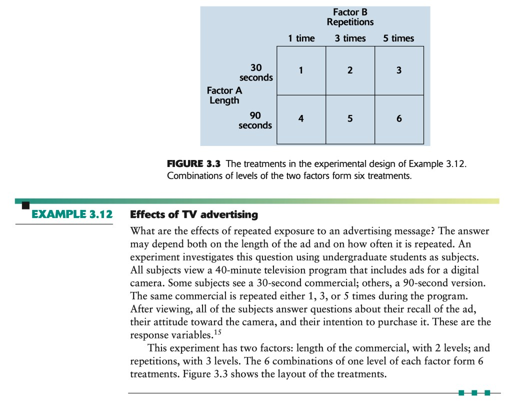
Comparative Experiments, the Placebo Effect, and Control Groups
Many laboratory experiments use a simple one-group pipeline:
Outside a tightly controlled physics or chemistry lab, however, this single-group design is fatally flawed because the treatment is confounded with time, environment, and human psychology:
In the 1960s, a popular medical procedure called "gastric freezing" had ulcer patients swallow a deflated balloon through which refrigerated liquid was pumped for an hour to cool the stomach and reduce acid production. An uncontrolled one-group study in the Journal of the American Medical Association showed that gastric freezing reduced acid production and relieved ulcer pain, leading to widespread adoption.
Later, skeptical researchers ran a controlled comparative experiment dividing ulcer patients into two groups: $82$ patients received genuine gastric freezing, while $78$ patients received a placebo (sham) treatment in which the liquid in the balloon was kept at body temperature. The outcome:
• Gastric freezing group: $34\%$ of the $82$ patients improved.
• Placebo control group: $38\%$ of the $78$ patients improved!
The earlier "cure" was entirely driven by the placebo effect—patients responding favorably to any medical intervention because of trust in their physician and expectations of relief. Gastric freezing was immediately abandoned.
The group of patients who receive a sham treatment (or standard baseline care) is called a control group because it enables us to control the effects of lurking variables (such as spontaneous recovery and the placebo effect) on the response.
Randomized Comparative Experiments & Completely Randomized Designs
Comparison alone is not enough if treatments are assigned with bias (such as planting one variety of corn on more fertile soil, or giving a new surgical procedure only to healthier patients). An experiment that uses both comparison of two or more treatments and randomization (impersonal chance assignment of subjects to treatments) is a randomized comparative experiment.
In a completely randomized design, all experimental subjects are allocated at random among all the treatments (usually in groups of equal size):
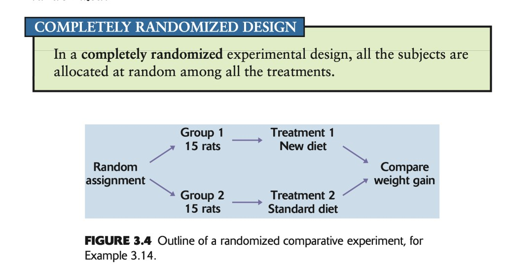
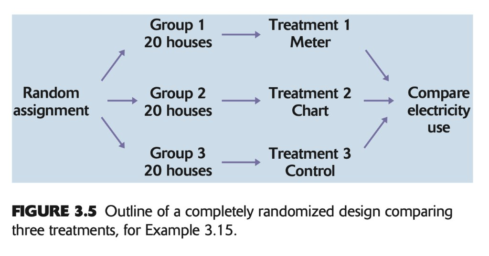
The Logic & Three Principles of Experimental Design
Why does a randomized comparative experiment provide gold-standard causal evidence?
- Random assignment creates treatment groups that are similar in all respects (known and unknown lurking variables alike) before the treatments are applied.
- Comparative treatment ensures that influences other than the experimental treatments (weather, economic shifts, placebo expectations) operate equally on all groups during the study.
- Therefore, any observed differences in average response must be due either to the treatments or to the play of chance in the random assignment!
To rule out the "play of chance" (such as accidentally assigning more fast-growing rats to Group 1), we assign enough subjects to each group so that individual chance variations average out:
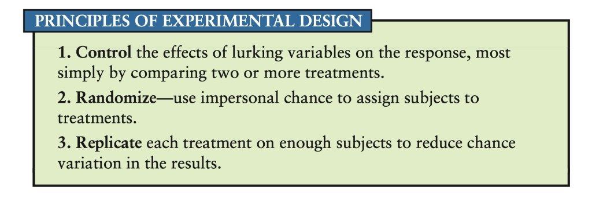
Statistical Significance: An observed effect so large that it would rarely occur by chance alone is called statistically significant. When you observe a statistically significant difference in a well-designed randomized comparative experiment, you have compelling evidence that the treatment caused the effect.
Cautions About Experimentation: Double-Blinding and Lack of Realism
- Double-blind experiments: Whenever human judgment is involved in experiencing or evaluating a response, an experiment should be double-blind—neither the subjects themselves nor the medical/research personnel who interact with them and measure the outcome know which treatment any subject received.
- Lack of realism (External Validity): The most serious potential weakness of an experiment is that its subjects, treatments, or laboratory setting may not realistically duplicate the real-world conditions we care about:
- Example 3.16 (TV Advertising): Showing a $40\text{-minute}$ videotape to college students who know they are participating in a study may not reflect how everyday viewers react at home.
- Example 3.17 (Center High-Mounted Brake Lights): Randomized trials on rental-car fleets before 1986 showed that adding a center third brake light reduced rear-end collisions by up to $50\%$. Yet after federal regulations mandated the third brake light on all new cars, rear-end collisions dropped by only $5\%$! Why? During the experiment, almost no other cars on the road had a center brake light, making it novel and eye-catching; once every car had one, drivers habituated to it.
Matched Pairs and Randomized Block Designs
Completely randomized designs assign all subjects from a single pool at once. When subjects vary widely in characteristics known beforehand (such as gender, age, or baseline health), we can achieve much higher precision by grouping similar subjects together before randomizing:
- Matched Pairs Design: Compares just two treatments by either:
- Choosing pairs of subjects that are as closely matched as possible (e.g., twins, or two patients matched on age and disease severity) and randomly assigning one treatment to one member of the pair and the other treatment to the second member; or
- Using each subject as their own control by giving every subject both treatments in a randomized order.
Example 3.18 (Coke versus Pepsi Taste Test): Pepsi ran a blind taste test in which professed Coke drinkers tasted both colas from unmarked glasses—a matched pairs design where each taster compares both colas in randomized order. However, when Pepsi reported that more than half of Coke drinkers preferred Pepsi, Coca-Cola pointed out a fatal flaw in execution: the Pepsi glasses were labeled M and the Coke glasses were labeled Q. A follow-up experiment pouring the exact same cola into both glasses showed that people systematically prefer the letter M over the letter Q! - Block Design: A block is a group of experimental subjects that are known before the experiment to be similar in some way that is expected to affect the response to the treatments. In a block design, the random assignment of subjects to treatments is carried out separately within each block. (A matched pairs design is simply a block design with block size $2$.)
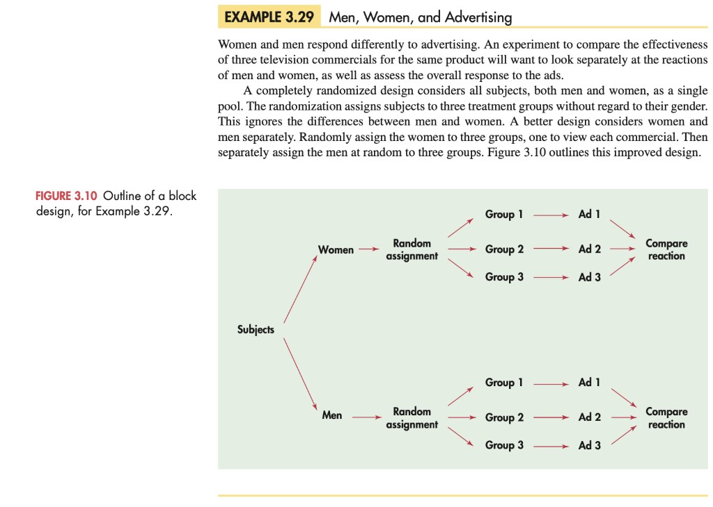
3.3 Toward Statistical Inference: Sampling Distributions, Bias, and Variability
Statistical inference uses a known fact about a sample to estimate an unknown truth about the wider population:
- A parameter is a fixed number that describes the population. In practice, we do not know its true value.
- A statistic is a number that describes a sample. Its value is known as soon as we collect the sample, but it varies from sample to sample.
In December 2008, Gallup asked a random sample of $n = 1{,}009$ U.S. adults whether they had eaten dinner at a restaurant during the past week, and $605$ answered "Yes":
$$\hat{p} = \frac{605}{1{,}009} = 0.5996 \approx \mathbf{0.60}\; (60\%).$$ Here $\hat{p} = 0.60$ is a statistic. The corresponding parameter $p$ is the unknown true proportion of all $\sim 230\text{ million}$ U.S. adults who ate out that week.
Sampling Variability and the Sampling Distribution
If Gallup drew a second SRS of $1{,}009$ adults, it would almost certainly not contain exactly $605$ "Yes" responses. The basic fact that the value of a statistic varies in repeated random sampling is called sampling variability. Why isn't sampling variability fatal to statistical inference? Because while individual random samples vary by chance, many random samples taken together follow a predictable, regular pattern!
Suppose the true (unknown to Gallup) population proportion is $p = 0.60$. Using software, we can simulate drawing $1{,}000$ independent SRSs of size $n = 100$ and $1{,}000$ independent SRSs of size $n = 2{,}500$ from this population and plot the histogram of the $1{,}000$ resulting values of $\hat{p}$:
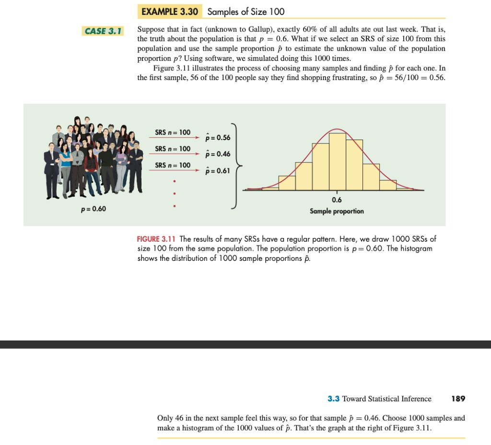
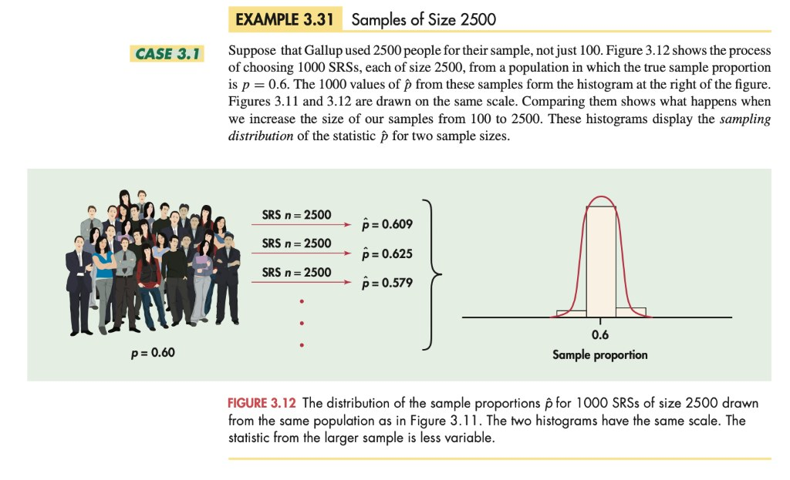
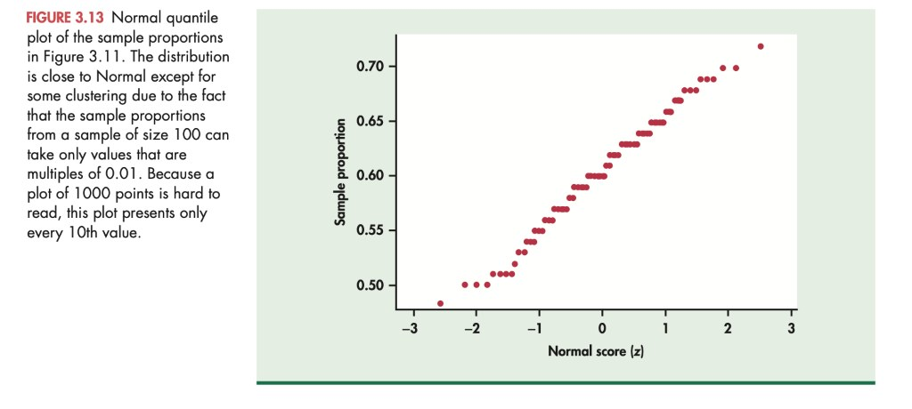
Bias versus Variability: The Bull's-Eye Target Analogy
We can picture the true population parameter $p$ as the bull's-eye at the center of a target, and each sample statistic $\hat{p}$ as an arrow fired at the bull's-eye:
- Bias concerns the center of the sampling distribution: A statistic used to estimate a parameter is unbiased if the mean of its sampling distribution is equal to the true value of the parameter being estimated. Bias means the archer's aim is systematically off in the same direction.
- Variability concerns the spread of the sampling distribution: Variability describes how widely scattered repeated shots are around their average landing spot. It is governed by the sampling design and the sample size $n$.
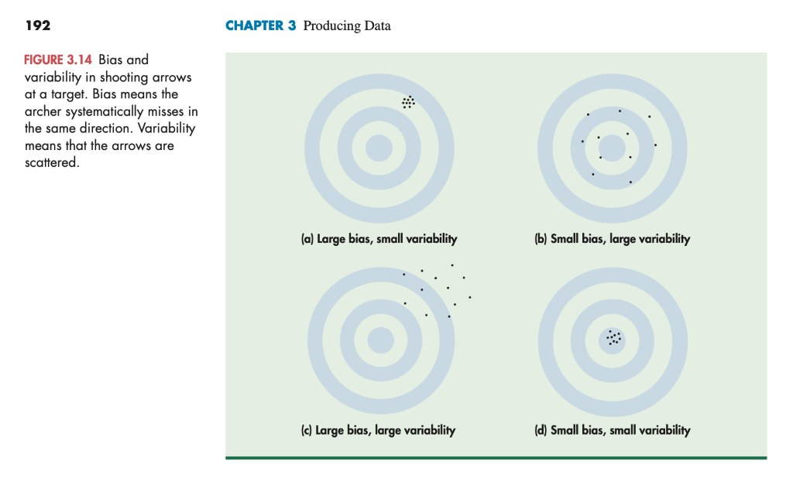
- To reduce bias: Use random sampling (SRS). Statistics computed from a simple random sample neither consistently overestimate nor consistently underestimate the population parameter.
- To reduce variability: Use a larger sample size $n$. You can make the variability of an SRS statistic as small as you wish by taking a large enough sample.
- Population size does not matter (as long as $N \ge 100n$): The variability of a statistic from a random sample depends on the sample size $n$, not on the size $N$ of the population, provided the population is at least $100$ times larger than the sample.
From the Handwritten Notes
Compare the sections above directly with the original handwritten pages from Statistics_Chapter3_Producing_Data.pdf:
View original page 2 — Cell-phone experiment vs. observational confounding

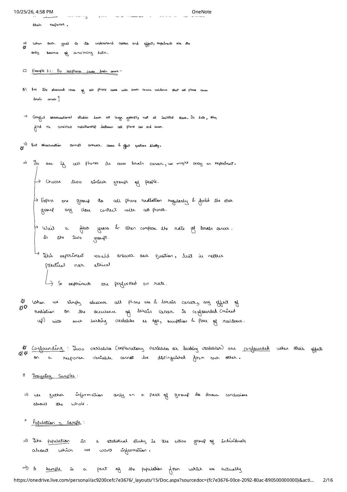
View original page 4 — Bias, Simple Random Samples (SRS), and Stratified Random Samples

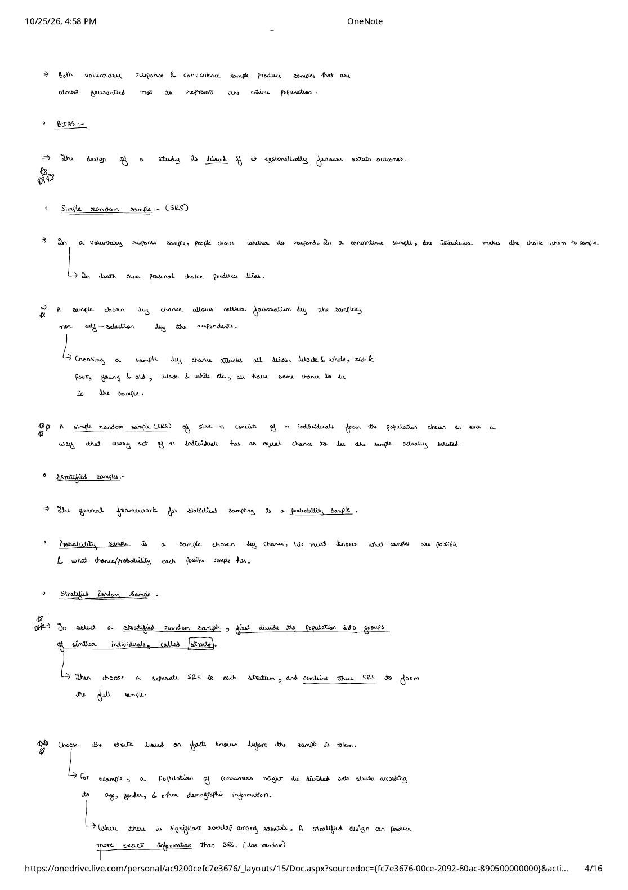
View original page 9 — Logic and Three Principles of Experimental Design

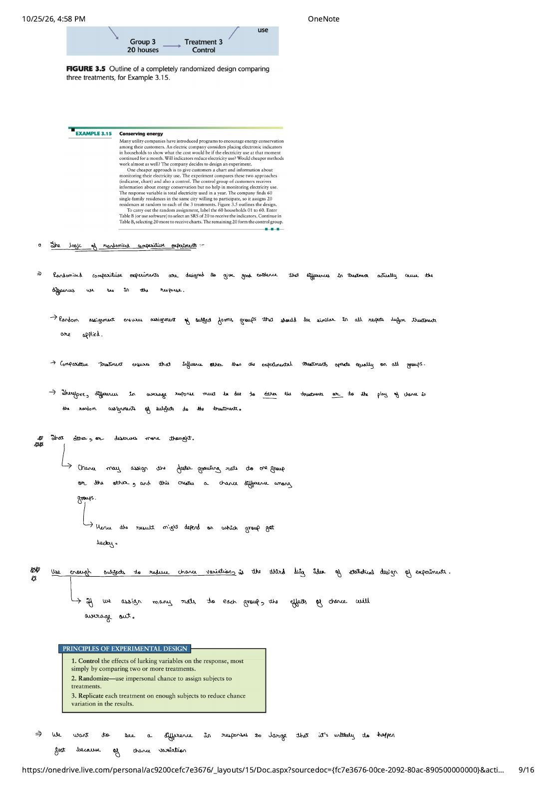
View original page 11 — Matched Pairs (Coke vs. Pepsi) and Randomized Block Designs

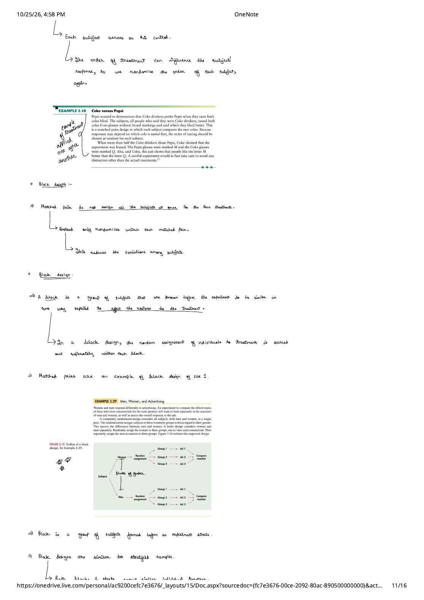
View original page 14 — Sampling distributions at $n = 100$ vs. $n = 2{,}500$

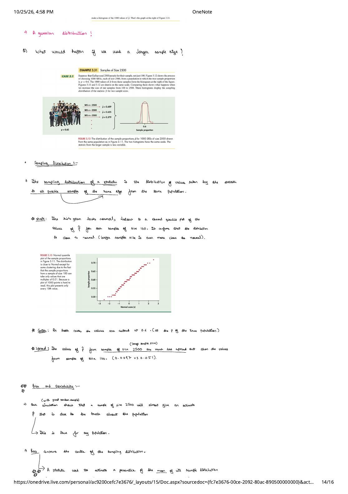
View original page 15 — Bias vs. Variability targets and why population size doesn't matter

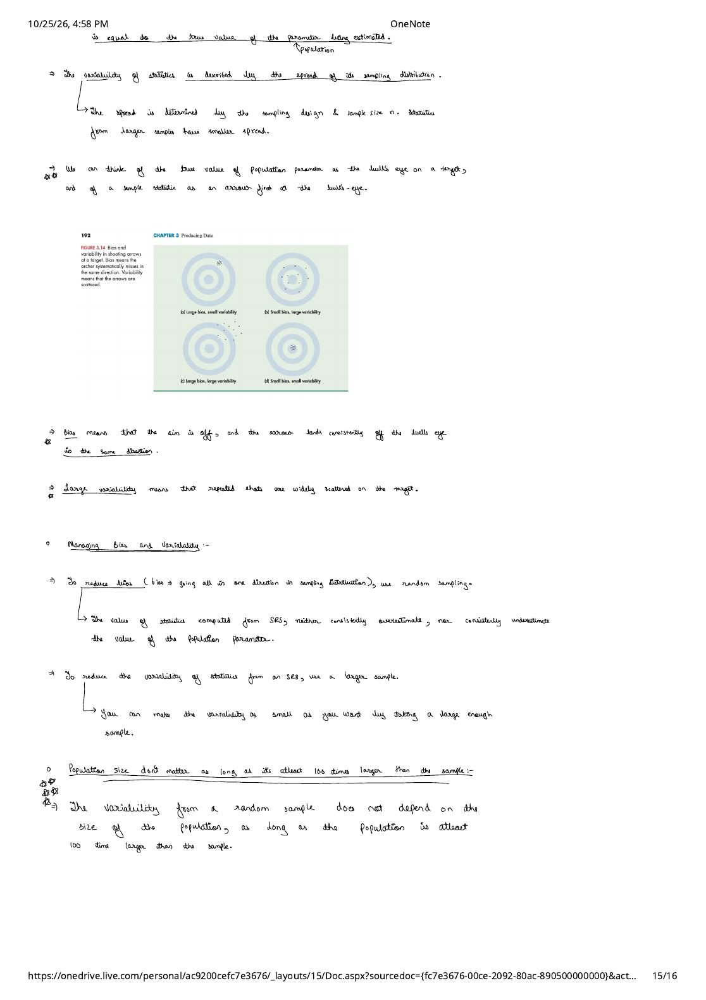